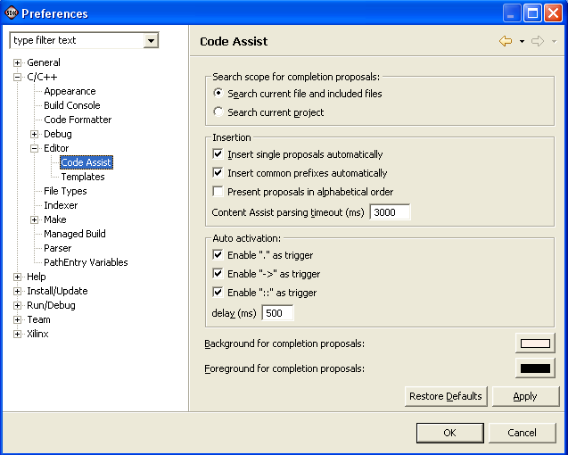

Code Assist preferences
You can customize the Code Assist feature on the Code Assist page of the C/C++ Editor Preferences window. To change the Code Assist preferences click
Window > Preferences > C/C++ > C++ Editor > Code Assist.

- Search scope for completion proposals
- You can configure the Code Assist feature to select
proposals from items contained only in the current file and included files, or
from the current project.
- Insert single proposals automatically
- Inserts an element into your code when the Code
Assist feature finds only one proposal.
- Present proposals in alphabetical order
- Proposals, by default, appear in order of relevance
determined by context, scope and prefix. Alternatively, you can configure the
Code Assist feature to order its proposals alphabetically.
- Code Assist parsing timeout (ms)
- For very large projects, the Code Assist feature might slow the response of the plug-in as the Code Assist feature parses the project for proposals. This setting stops the Code Assist parse when it reaches the specified threshold.
-
- Auto activation
- Certain predefined triggers force the Code Assist feature to activate. You can disable the predefined triggers with these checkboxes.
- Auto activation delay
- Specifies the number of milliseconds before Code
Assist is activated, in Autoactivation mode.
- Background for completion proposals
- Specifies the background color of the Code Assist
dialog box.
- Foreground for completion proposals
- Specifies the foreground color of the Code Assist dialog box.

Coding aids

Customizing the C/C++ editor

C/C++ editor preferences